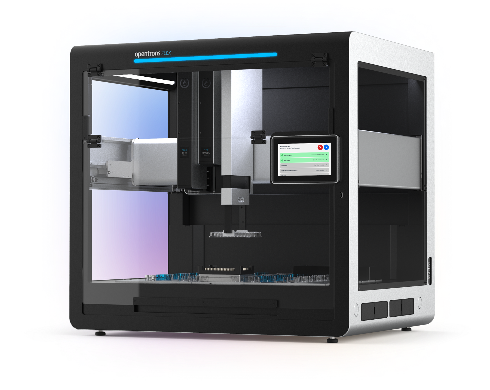
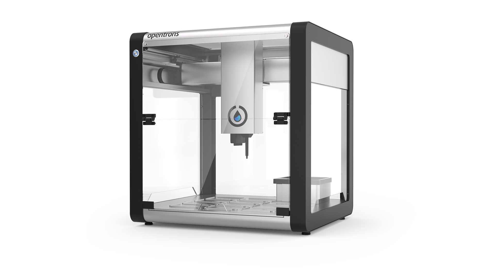
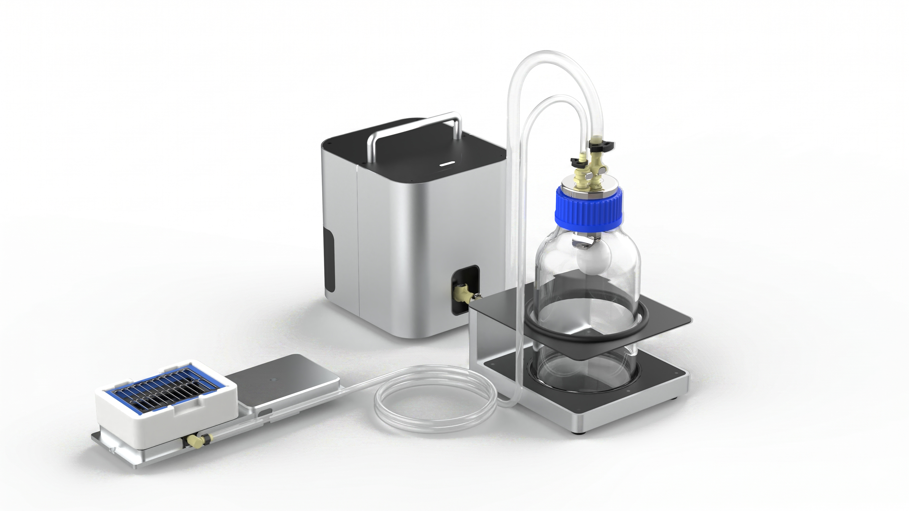
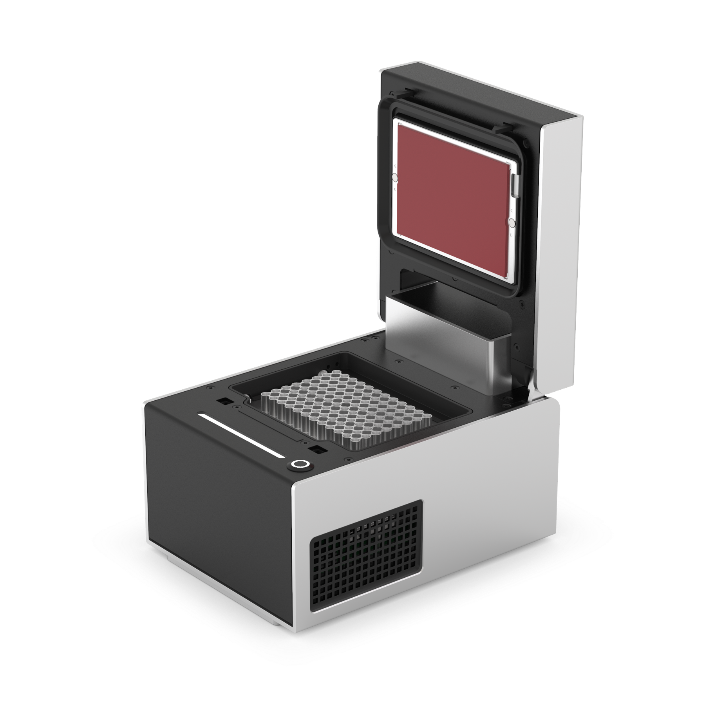

Overview
Writing samples and technical documentation for robotics and AdTech platforms.
Hardware documentation¶
Instruction manuals for liquid handling robots. These manuals feature my work as a contributing writer (Flex) primary author (OT-2).
-

Flex Instruction Manual
Featured sections:
-

OT-2 Instruction Manual
Featured sections:
Software documentation¶
The Vacuum Module API samples are a reference for scientists who want to write their own liquid-handling protocols. The G-code articles provide low-level machine instructions for developers integrating Opentrons hardware modules into third-party software and custom environments.
-

Vacuum Moudle API Documentation
Featured sections:
-

Thermocycler G-Codes Documentation
Featured sections:
Ad tech documentation¶
These are older AdTech writing samples that explain budget distribution, campaign performance, and device identity in an ad-serving system.
-
Data Pipeline Flow
Explains how budget data moves through a distributed ad-serving stack.
-
Resource Allocation
Explains how ad servers allocate budget based on campaign performance.
-
Fixing Delays With a Budget Update
Instructions on how to force a budget update to start ad delivery.
-
Probabilistic Modeling
Explains how device graph confidence scores determine relationship strength between devices.